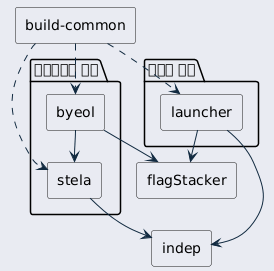
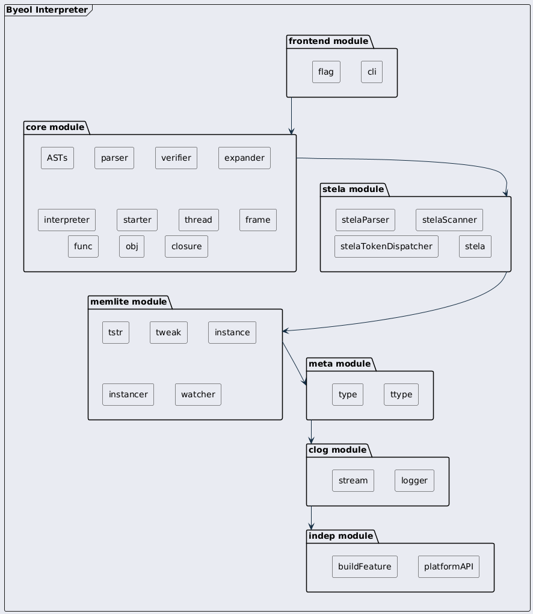

이 문서는 Byeol 프로젝트의 구현을 이해하기 위한 가이드입니다. Byeol은 추상 구문 트리(AST)를 직접 실행하는 강타입 인터프리터 언어입니다. Tree-walking interpreter 방식으로 구현되었으며, Layered Architecture 패턴을 기반으로 설계되었습니다.
여기서 말하는 Byeol 프로젝트는 byeol 저장소 하나가 아닙니다. 여러 개의 독립된 저장소가 모여 하나의 결과물을 만들어내는 구조이며, 이 문서는 그 전체를 다룹니다. 그래서 설명은 가장 큰 단위인 저장소에서 시작해서, 저장소 안의 계층으로, 다시 계층 안의 모듈로 축척을 좁혀가며 진행됩니다.
이 가이드는 각 모듈의 설계, 알고리즘, 클래스들이 어떻게 상호작용하는지를 중점적으로 다룹니다. STL 컨테이너와 스마트 포인터에 익숙한 일반적인 C++ 개발자를 대상으로 작성되었습니다. byeol 언어의 문법은 이미 알고 있다는 전제로 설명하므로, 필요하다면 먼저 언어 가이드를 참고하세요.
필요하다면 다음 하위 문서들로 바로 이동할 수 있어요:
Byeol 프로젝트는 여러 개의 GitHub 저장소로 나뉘어 있습니다. 하나의 저장소에 전부 담지 않은 이유는 재사용 때문입니다. 플랫폼 추상화나 설정 언어처럼 byeol이 아닌 다른 프로젝트에서도 쓸 수 있는 구성요소들은 독립시켜야 실제로 재사용할 수 있고, 각자 따로 테스트하고 따로 배포할 수 있죠.
각 저장소가 맡은 역할은 다음과 같습니다.
| 저장소 | 역할 |
|---|---|
| indep | 플랫폼 추상화 계층입니다. 파일시스템, 동적 로딩, 프로세스 생성처럼 운영체제마다 다른 기능을 감싸며, 조건부 컴파일이 허용되는 유일한 곳입니다. |
| stela | 설정에 중점을 둔 특수목적 언어입니다. 언어를 구현하는 데 필요한 로깅, 타입 관리, 메모리 관리 모듈을 함께 담고 있습니다. |
| flagStacker | 명령행 인자와 플래그를 해석하는 계층입니다. byeol과 launcher가 모두 사용합니다. |
| byeol | 언어 구현의 본체입니다. AST 처리, 파싱, 검증, 실행을 담당하며 인터프리터 실행파일을 만들어냅니다. |
| launcher | 사용자의 진입점이 되는 실행파일입니다. 버전을 해소하고 인터프리터를 실행하는 얇은 프록시 역할을 합니다. |
| build-common | 여러 저장소가 공유하는 CMake 규칙입니다. 버전 파싱, 컴파일 옵션, 의존성 검사 같은 공통 설정을 한곳에서 관리합니다. |
저장소 목록을 보면 stela가 설정 언어치고는 많은 것을 담고 있다는 인상을 받을 수 있습니다. 로깅(Clog), 타입 관리(Meta), 메모리 관리(Memlite)가 모두 stela 저장소 안에 있으니까요.
이는 stela가 byeol에서 파생된 언어이기 때문입니다. 설정을 다루더라도 언어는 언어이므로, 값을 표현하려면 타입 시스템이 필요하고 객체를 다루려면 메모리 관리가 필요합니다. stela를 독립적으로 쓸 수 있게 만들려면 이 기반들이 stela와 함께 있어야 하죠.
그리고 byeol은 pod 배포에 쓰이는 manifest.stela 파일을 읽기 위해 stela가 필요한데, 마침 byeol 자신도 같은 타입 관리와 메모리 관리를 써야 합니다. 그러니 stela를 가져오면 필요한 기반이 함께 따라오는 지금의 구조가 자연스럽게 만들어졌습니다.
저장소들은 아래와 같은 방향으로 의존합니다.

이 그래프에는 눈여겨볼 성질이 세 가지 있습니다.
첫째로 의존은 언제나 한 방향입니다. 역방향으로 참조하는 저장소가 하나도 없습니다. 덕분에 어떤 저장소든 자기보다 아래에 있는 것들만 알면 되고, 위에서 무슨 일이 벌어지는지 몰라도 됩니다.
둘째로 indep이 유일한 공통 뿌리입니다. 인터프리터 계통과 진입점 계통은 서로 다른 길을 가지만 결국 둘 다 indep으로 수렴합니다. 플랫폼 추상화를 한 곳에서만 관리하겠다는 의도가 그대로 드러나는 지점이죠.
셋째로 byeol과 launcher는 서로를 모릅니다. 둘 사이에는 코드 수준의 의존이 전혀 없습니다. 같은 하위 저장소를 공유할 뿐, 서로를 참조하지 않죠. 두 실행파일은 오직 런타임에 프로세스를 띄우는 방식으로만 만납니다. 자세한 내용은 배포와 실행 구조 에서 다룹니다.
저장소들은 CMake의 FetchContent를 사용해 소스 수준에서 합쳐집니다. git submodule을 쓰지 않으며, 빌드할 때 필요한 저장소를 직접 내려받아 함께 컴파일하는 방식이죠. 각 의존은 태그로 버전이 고정되어 있어서, 상위 저장소가 명시적으로 올리기 전까지는 하위 저장소의 변경이 흘러들어오지 않습니다.
선언이 놓이는 위치에도 규칙이 있습니다. 저장소 최상단에 모아두지 않고, 그 의존을 실제로 필요로 하는 모듈이 직접 선언합니다. 예를 들어 stela를 필요로 하는 것은 Core 이므로 core의 CMakeLists.txt가 stela를 가져오고, 플래그 해석이 필요한 것은 Frontend 이므로 frontend가 flagStacker를 가져옵니다. 그래서 CMakeLists.txt만 읽어도 어느 모듈이 무엇을 필요로 하는지 알 수 있습니다.
다음은 Core 가 stela를 가져오는 실제 선언입니다.
SOURCE_SUBDIR로 각 저장소의 build 디렉토리를 진입점으로 지정한다는 점을 눈여겨보세요. 모든 저장소가 같은 구조를 따르기 때문에 가능한 규약입니다.
build-common은 조금 다르게 취급됩니다. FetchContent로 가져오지 않고 각 저장소의 external 디렉토리에 놓이며, 전역 속성으로 중복 포함을 막습니다. 그래서 어떤 저장소가 단독으로 빌드되든, 다른 저장소에 딸려 들어가든 동일하게 동작합니다.
이렇게 합쳐진 결과물은 정적으로 링크되어 하나의 실행파일이 됩니다. 배포할 때 따로 챙겨야 하는 공유 라이브러리가 없다는 뜻이죠.

Byeol 프로젝트는 엄격한 Layered Architecture 패턴을 따릅니다. 각 계층은 하위 계층에만 의존할 수 있으며, Indep 모듈 위로는 플랫폼 독립성이 유지됩니다.
각 모듈은 하위 계층의 모듈에만 접근할 수 있습니다. 예를 들어, Core 는 Stela, Memlite, Meta, Clog, Indep 에 의존하지만, Frontend 나 다른 상위 모듈에는 의존하지 않습니다.
이러한 아키텍처는 플랫폼 독립성, 테스트 용이성, 명확한 의존성 관리를 제공합니다. 플랫폼 종속 코드는 Indep 모듈에만 격리되어 있으며, 상위 모듈들은 추상화된 인터페이스를 통해서만 접근합니다. 이는 Dependency Inversion Principle을 따르는 설계로, 다른 모듈들은 플랫폼에 관계없이 동일한 방식으로 동작합니다.
각 모듈에 대해 간략히 소개합니다.
| Module | 기능 |
|---|---|
| indep | 플랫폼 종속된 코드는 모두 이곳에 담깁니다. indep은 가장 밑에 있기 때문에 이후의 모든 코드는 이론상 항상 플랫폼 독립적인 코드가 됩니다. |
| clog | c++ 코드를 위한 강력한 로그 모듈입니다. stream을 기반으로 해서 화면/파일 등 로깅 되는 곳을 선별하는 등 다양한 기능을 제공합니다. |
| meta | 강력한 타입 관리 모듈입니다. 메타프로그래밍을 사용해서 c++ 클래스의 타입정보를 제공합니다. byeol managed 환경의 타입시스템의 기반이기도 합니다. |
| memlite | 경량화된 메모리 관리 모듈입니다. stl의 unique_ptr, shared_ptr 에서 개선된 클래스를 제공합니다. |
| stela | byeol 언어의 설정에 중점을 둔 특수목적 언어입니다. manifest에 사용됩니다. |
| core | 말그대로 주요 AST 처리, 파싱, 검증, 실행 등 대부분의 주요 동작을 담당합니다. |
| frontend | flag 처리를 비롯한 cli 인터페이스를 구현합니다. 결과적으로 core 모듈의 interpreter에게 명령을 내리는 구조입니다. |
다음 문서: indep 모듈 - 플랫폼 추상화 계층